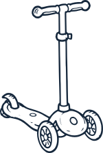

The child we're looking for is five or six, playing four. Takes direction. Fine around new people. Good at pretending. That's the whole list.
NO ACTING EXPERIENCE NEEDED.
Short days across Summer 2027. A crew of two or three. You there the whole time.
NOBODY IS ASKING A FOUR-YEAR-OLD TO CARRY A SCENE.
We shoot 35mm stills with a small handheld camera. No film, no video, no sound.
There's an honorarium. The amount rides on funding.
Sounds fun and doable for your family? Say hi.
We read everything that comes in and we'll write back.
Need to add something, or want your note deleted? hello@scooterland.ca
Parker is four. He doesn't do what anyone expects — not at daycare, not at home.
His parents are trying everything, assessments, doctors, tests. None of it explains their son.
Then one afternoon Parker gets on his scooter and goes.
The rest of the film goes with him. Alleys, the pool, skateboarders, strangers. The further he gets, the more we see things his way.

Most of Scooterland is built out of 35mm photographs instead of filmed scenes.
The moving images get generated from those stills.
The photographs are the work too, intended for art exhibitions.
Whether a still can really become a piece of a moving film is a big question for us.
Lived any of this yourself — as a parent, as a neurodivergent person, through your work? It counts for a lot here.
Aaron Phelan / writer, director
hello@scooterland.ca